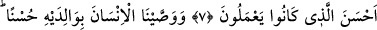

DÖNÜŞÜNÜZ
ANCAK BANADIR
7. Îman edip iyi işler yapanların (geçmiş) kötülüklerini elbette örteriz ve onlara,
yaptıklarının daha güzeli ile karşılık veririz.
8. Biz, insana, ana-babasına iyi davranmasını tavsiye etmişizdir. Eğer onlar, seni,
hakkında bilgin olmayan bir şeyi (körü körüne) bana ortak koşman için zorlarlarsa,
onlara itâat etme. Dönüşünüz ancak banadır. O zaman size yapmış olduklarınızı
haber vereceğim.
9. Îman edip iyi işler yapanları, sâlihler (zümresi) içine muhakkak katarız.
“Îman edip iyi işler yapanların (geçmiş) kötülüklerini elbette örteriz.” Yani,
îmanları sebebiyle küfürlerini, ibâdet ve tâatlarıyla da günahlarını, kötülüklerini her
zaman silip örteceğiz.
“Kötülükleri örtmek”, sanki onları işlememiş konumuna getirmektir. Bazıları demiştir
ki: “Kötülükleri örtmek”, iyilik yaparak onu yok etmek ve terettüb eden cezâyı
kaldırmak ve terk etmek demektir.
“Ve onlara, yaptıklarının daha güzeli ile karşılık veririz.” Sadece güzel amelleri
için bire on veya daha fazla karşılık vererek onların amellerini en güzel şekilde
mükâfatlandıracağız. Zenginden ihtiyaç sâhibi yoksula bir şey ulaşması âdettendir.
Bize göre amel-i sâlih, Allah’ın emrettiği her şeyi içine alır. Zira amel, O’nun
emretmesiyle sâlih olur. Şayet o ameli yasaklamış olsaydı sâlih olmayacaktı.
Dolayısıyla salâh ve fesâd, fiilin bizzat kendisinde olan gerekliliklerden değildir.
Mu‘tezile der ki: Salâh ve fesâd, fiilin sıfatlarındandır; emir ve nehiy fiile terettüb
eder. Doğruluk, fiil olarak sâlih bir amel olduğu için Allah onu emretmiştir. Bize göre
ise salâh, fesâd, hasen ve kubh (amelin iyi ve kötü oluşu); emir ve nehiy üzerine terettüb
eder. Onlara göre ise emir ve nehiy, hasen ve kubh üzerine terettüb eder (yâni emir ve
nehiy, amelin iyi ve kötü oluşuna bağlıdır.)
Bil ki, insanın yaptığı her hayırlı amele, Allah Teâlâ ecir ve sevab verir ve insan
Allah’a kavuştuğu zaman bunu Allah’ın yanında bulur. Dolayısıyla yaptığı hayrın